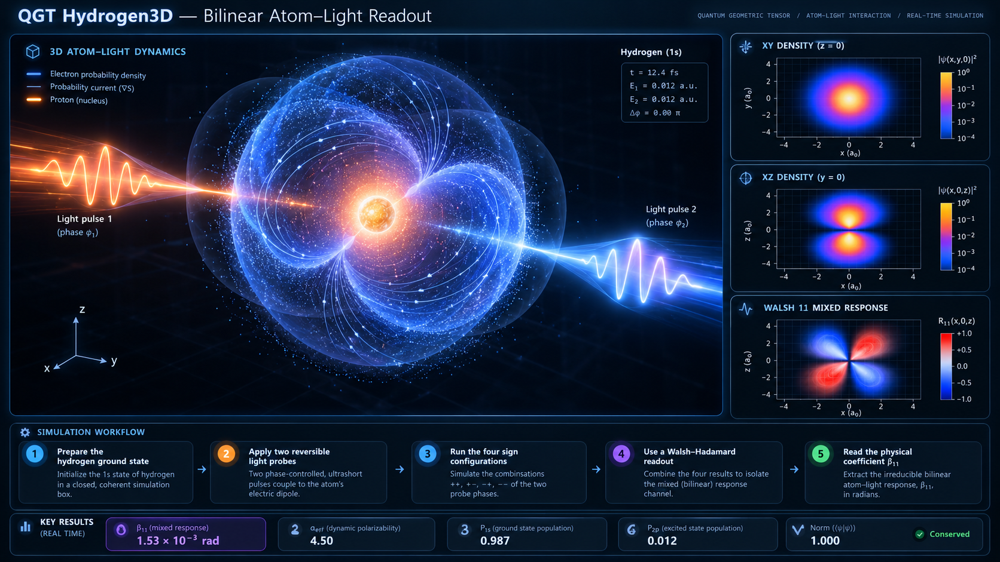

3D TDSE · drag to rotate
brightness = |ψ|² · hue = arg ψ · filaments = probability current
The live simulator keeps the Schrödinger-grade 3D atom and explicit light coupling, then adds the new coherent two-probe layer: four reversible sign configurations are evolved and a Walsh–Hadamard readout isolates the irreducible mixed atom–light phase, β₁₁.

The key change is not cosmetic. The simulator now distinguishes the atomic dynamics from the measurement grammar that extracts a relation between two reversible probes.
The Coulomb Hamiltonian produces the bound 1s sector and its coherent real-time dynamics.
Two weak dipole probes enter with independently controllable signs s₁,s₂ = ±1.
All four branches use the same TDSE and differ only by the controlled probe signs.
The H⊗H character channel cancels common and single-probe terms and leaves β₁₁.
The browser engine uses dimensionless Coulomb units with H₀ = −½∇² − 1/ρ. LIGHT uses the explicit dipole term −F(τ)z. BILINEAR evolves four copies of the same 3D TDSE and computes β₁₁ directly from their ground-state return amplitudes.
A separate partial-wave TDSE solver, using Crank–Nicolson/Cayley propagation and the same Schrödinger-grade Hamiltonian, provides the reproducibility benchmark. An independent radial Sternheimer solve supplies the static polarizability.
| Quantity | Reference |
|---|---|
| β₁₁, T=160 | 1.529632891 × 10⁻³ rad |
| αeff, T=160 | 4.521633076 |
| static α₁s | 4.500003906 |
| exact Schrödinger α₁s | 4.5 |
| max norm drift | 1.54 × 10⁻¹² |
| no-overlap β₁₁ | −6.80 × 10⁻⁹ rad · PASS |